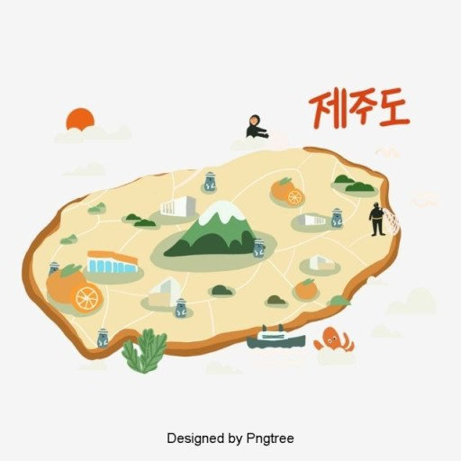
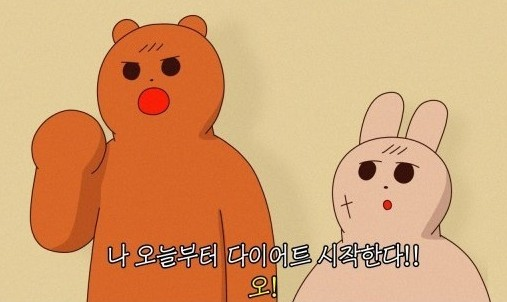
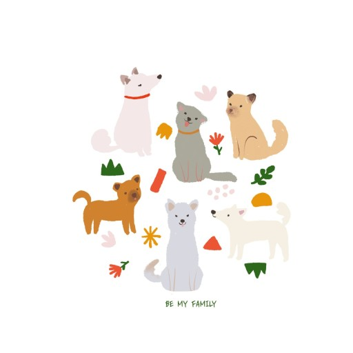
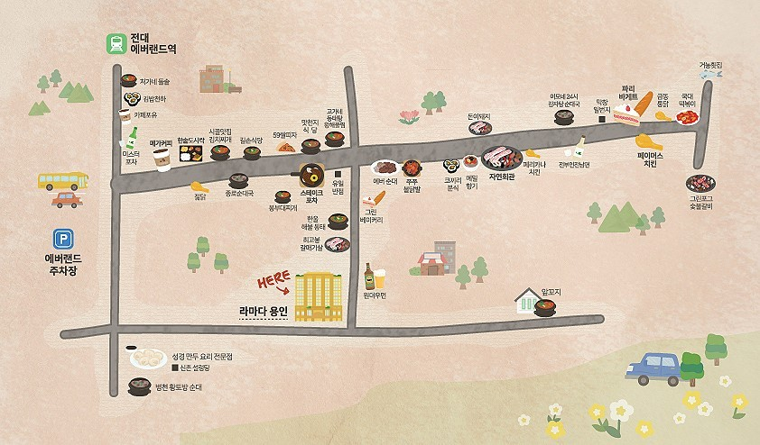
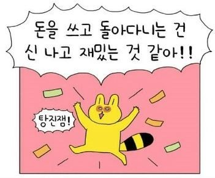
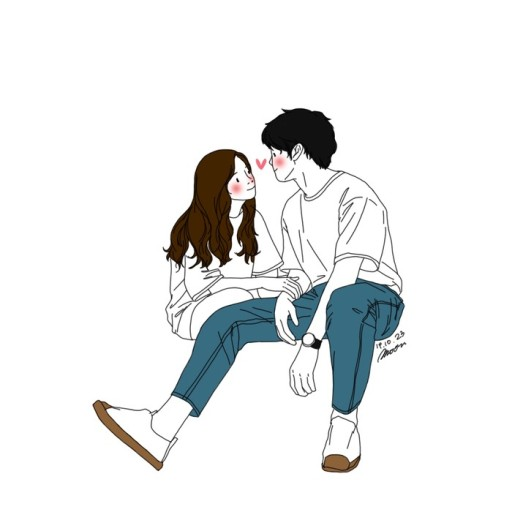

|
bukit #1 교환학생이나 호주 워홀 갔다오기
올해 대학생 되면서 예전보다 더 많은 세상을 알게 되었다. |
|
bukit #2 제주도 한달 살기 도전하기
앞으로 열심히 공부하고 돈을 벌어서 힐링을 위한 제주도에서 한달살기를 도전해보고싶다. |
 | |
|  |
bukit #3 다이어트 성공하고 유지하기
고3 수험생활도 끝났으니 본격적으로 다이어트를 시작할 것이다. |
|
bukit #4 내집마련
내집마련이 하늘의 별따기인 요즘시대에서 |
||

|
bukit #5 조리 기능사 자격증 따기
원래 나는 요리사가 되는 것이 꿈이었다. |
|
bukit #6 유기견 보호소에 정기 후원하기
내 전공과 꿈이 동물과 관련되어 있는 만큼 동물과 관련된 활동을 꾸준히 해보고 싶었다. |
 | |
|  |
bukit #7 전국 맛집 투어 하기
난 어렸을 떄부터 맛있는 걸 먹는 것을 먹거나 만들어 먹는 것을 매우 좋아했다. |
|
bukit #8 부모님 여행 보내드리기
거의 20년 동안 날 키워오시면서 부모님이 얼마나 대단하시고 힘드셨는지 생각하게 되었다. |
||
|  |
bukit #9 돈 걱정없이 실컷 놀아보기
지금까지 살아오면서 큰 금전 문제 없이 잘 살아오기는 했지만 그렇다고 해서 돈 걱정없이 펑펑 써보지는 않았다. |
|
bukit #10 연애해보기
지금까지 살아오면서 단 한 번도 연애 혹은 비슷한 것도 해본 적이 없었다. |
 | |
Top 화면으로 이동